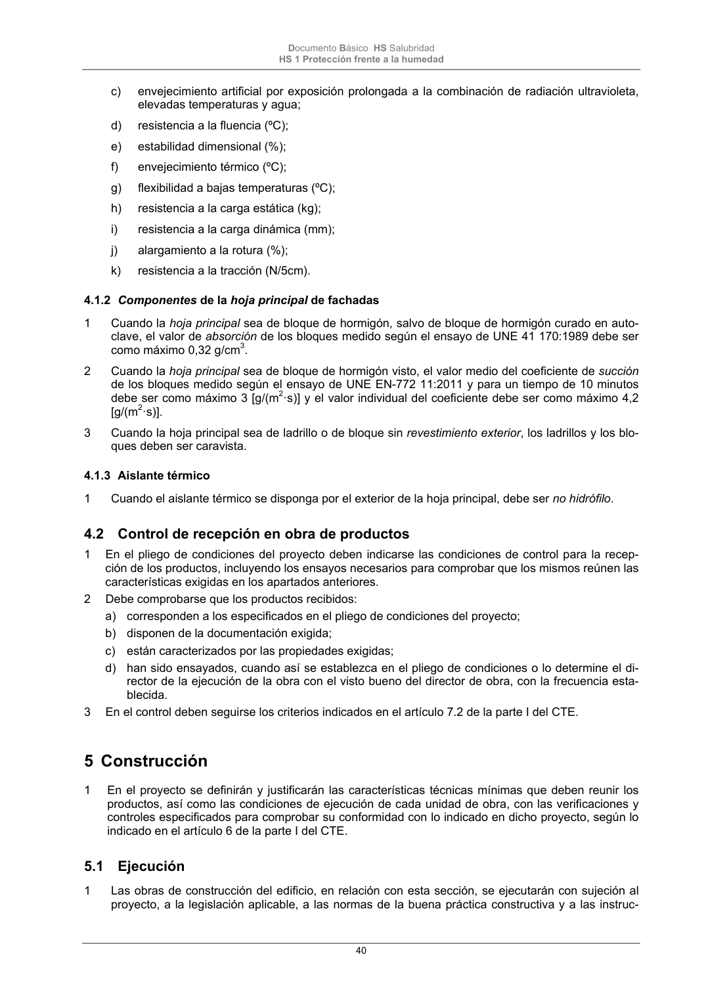

DB-HS · 4.1.2 Componentes de la hoja principal de fachadas · versión 2022-06-14 · capa oficial
Formatos: JSON compacto · Markdown · PDF fuente
Ámbito del documento · texto del ámbito · documento y tablas
ID técnico a0097 · PDF pág. 40 · jerarquía no validada por persona · contrastado con el literal de la página 40 (candidato tipográfico); no validado por persona · padre: raíz
4.1.2 Componentes de la hoja principal de fachadas 1 Cuando la hoja principal sea de bloque de hormigón, salvo de bloque de hormigón curado en auto- clave, el valor de absorción de los bloques medido según el ensayo de UNE 41 170:1989 debe ser como máximo 0,32 g/cm3. 2 Cuando la hoja principal sea de bloque de hormigón visto, el valor medio del coeficiente de succión de los bloques medido según el ensayo de UNE EN-772 11:2011 y para un tiempo de 10 minutos debe ser como máximo 3 [g/(m2·s)] y el valor individual del coeficiente debe ser como máximo 4,2 [g/(m2·s)]. 3 Cuando la hoja principal sea de ladrillo o de bloque sin revestimiento exterior, los ladrillos y los blo- ques deben ser caravista.

PDF fuente redistribuible: copia fiel enlazada en esta página (SHA256 verificado).